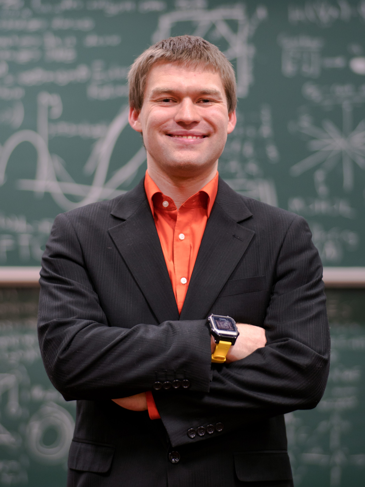
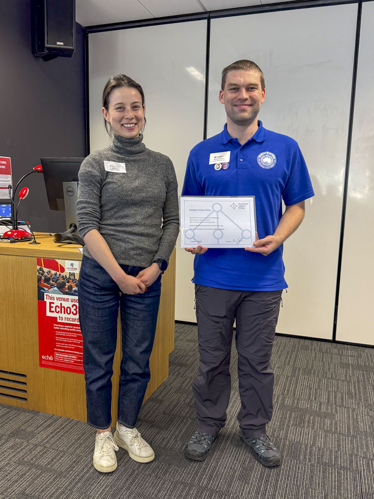
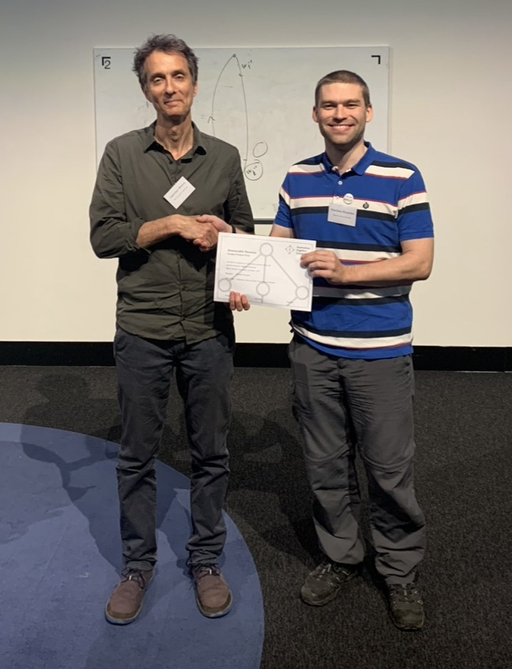

Matthias Fresacher (he/him) is an emerging researcher whose work focuses on analysing properties of the diagram monoids as well as semigroup theory more generally. Currently a Doctor of Philosophy student at Western Sydney University under the supervision of Assoc. Prof. James East, Matthias is investigating the congruence lattices of the finite twisted Brauer and Temperley-Lieb monoids diagrams and related properties and generalisations.
Completing his Master's and Bachelor's degree at the University of Adelaide and on exchange at the National University of Singapore, Matthias has since built a wide ranging publication portfolio and strives to continue to build his academic presence by researching a growing array of problems in various areas of pure mathematics and related subjects. With a general research aim of collaborating across disciplines, Matthias looks forward to exploring new problems and collaborations in his post doctoral and academic career ambitions whilst also continuing to develop his teaching and supervising skills and experience.
Teaching wise, Matthias has course coordinated, lectured and tutored at Western Sydney University, the University of Adelaide and the University of Technology Sydney.
Matthias was the inaugural President and founder of the Association of Australian Mathematics Students (AAMS).
Abstract algebra, semigroups, monoids, diagram monoids/algebras, and related areas such as category theory, algorithms, CAS, amongst others.
This page is best viewed on a larger screen.
| Postal address: | Matthias Fresacher |
| Centre for Research in Mathematics and Data Science | |
| School of Computer, Data and Mathematical Sciences | |
| Western Sydney University | |
| Locked Bag 1797, Penrith NSW 2751 | |
| Australia | |
| Office: | Parramatta South Campus, Building EN |
| Email: | m.fresacher@westernsydney.edu.au |
| Website: | matthias-fresacher.github.io/ |
| Google Scholar: | scholar.google.com/citations?user=njdtJ6sAAAAJ |
| ORCID: | orcid.org/0000-0003-0677-3701 (not actively maintained) |
| GitHub: | github.com/Matthias-Fresacher |
| Profiles: | researchers.adelaide.edu.au/profile/matthias.fresacher (historic) |
| |
www.youtube.com/@MatthiasFresacher |
| Western Sydney University | Doctor of Philosophy (Pure Mathematics) | 09/2022 – Ongoing |
| University of Adelaide | Master of Philosophy (Pure Mathematics) | 02/2019 – 09/2021 |
| University of Adelaide | Bachelor of Mathematical Sciences (Advanced) (Pure & Applied Mathematics) | 07/2016 – 12/2018 |
| National University of Singapore | Exchange | 01/2018 – 12/2018 |
| University of Adelaide | Bachelor of Music (Classical Performance (Trombone)) | 02/2013 – 12/2015 |
Sorted reverse chronologically
[1] Boland, J., Fresacher, M., Hill, D., Jin, S., Li, Y., Mills, G., Nam, K., Oakeshotte, C., and Olenko, A. Measures of Reliability Risk for Australian Energy Sector. ANZIAM Proceedings. Accepted.
[2] Carroll, L., East, J., and Fresacher, M. Presentations for semigroups of full-domain partitions. International Journal of Algebra and Computation. [doi] [arXiv]
[3] East, J., Fresacher, M., Muhammed, P. A. A., and Stokes, T. (2026). Categorical representation of DRC-semigroups. Journal of Algebra, vol. 691, pages 230-291. [doi] [arXiv]
[4] Fresacher, M. (2021). Approximation of Higher Degree Spectra Results for Twisted Laplace Operators. Master thesis, The University of Adelaide. [pdf] [University of Adelaide]
[5] Li, Z., Fresacher, M., and Scarlett, J. (2019). Learning Erdős-Rényi Random Graphs via Edge Detecting Queries. Advances in Neural Information Processing Systems 32, pages 402–412. [pdf] [poster] [NeurIPS] [arXiv]
[6] Fresacher, M., Stewart, W. and Tubbenhauer, D. Generalized diagram categories and monoids, and their representations. Under review. [arXiv]
[7] Chan, K., Cope, R., Flegg, M., Fresacher, M., Gorelick, S., Lee, B., Lydeamore, M. J., and Stokes, B. Localisation of a point target using cryo-electron microscopy imaging. Under review.
Sorted alphabetically
[1] Carroll, L., East, J., Fresacher, M., Lyu, M., and Muhammed, P. A. A. Presentations for semigroups of trivial-cokernel partitions. In preparation.
[2] Cho, J. W., East, J., Fresacher, M., Muhammed, P. A. A., and Ruškuc, N. Free monogenic regular *-semigroups. In preparation.
[3] Chowdhury, S., East, J., Fresacher, M., and Muhammed, P. A. A. Walled Brauer monoids. In preparation.
[4] East, J. and Fresacher, M. Congruence lattices of 0-twisted Brauer & Temperley-Lieb monoids. In preparation.
[5] East, J., Fresacher, M., Gould, V., Kinyon, M., Muhammed, P. A. A., Stokes, T. and Umar A. Quasi-identities satisfied by the partition monoid and its projection algebra. In preparation.
[6] Fresacher, M., and Gould, V. Translational hulls of 0-twisted diagram monoids. In preparation.
[7] Fresacher, M., Stewart, W. and Tubbenhauer, D. Tight twistings of semigroups. In preparation.
Sorted reverse chronologically
[1] Fresacher, M. (2025). A successful return of a student conference. In AustMS Gazette, vol. 52(1), pages 24-25. [AustMS]
[2] Fresacher, M. (2024). Number of congruences of the $0$-twisted Temperley-Lieb monoid of degree $n$. Entry A373011 in The On-Line Encyclopedia of Integer Sequence. [OEIS]
[3] Fresacher, M. (2024). Number of congruences of the $0$-twisted Brauer monoid of degree $n$. Entry A368923 in The On-Line Encyclopedia of Integer Sequence. [OEIS]
[4] Fresacher, M. (2023). The pmdraw package. LaTeX Package. [CTAN]
| Western Sydney University | Luka Carroll | Winter research/Capstone project | Co-supervisor | 06/2025 – 12/2025 |
| Talaria Summer Institute | Kayla Xu | Summer research project | Principal supervisor | 07/2025 – 08/2025 |
| Western Sydney University | Luka Carroll | Summer research project | Co-supervisor | 12/2024 – 02/2025 |
| Western Sydney University | Saakshi Singh | Summer research project | Co-supervisor | 12/2023 – 02/2024 |
| Western Sydney University | School of Computer, Data and Mathematical Sciences | Tutor, marker & invigilator | 02/2023 – 07/2026 |
| University of Adelaide | Wirltu Yarlu Academic Mentoring Program (WYAMP) | Mentor | 02/2022 – 12/2025 |
| University of Adelaide | Karnkanthi Indigenous Education Program | Mentor | 06/2022 – 12/2025 |
| Western Sydney University | School of Computer, Data and Mathematical Sciences | Research assistant | 08/2025 – 11/2025 |
| Western Sydney University | School of Computer, Data and Mathematical Sciences | Lecturer & course coordinator | 03/2024 – 07/2024 |
| University of Technology Sydney | School of Mathematical and Physical Sciences | Tutor, marker & invigilator | 02/2024 – 06/2024 |
| University of Technology Sydney | School of Mathematical and Physical Sciences | Tutor, marker & invigilator | 02/2023 – 06/2023 |
| University of Adelaide | School of Computer Science | Tutor, marker & invigilator | 03/2021 – 06/2023 |
| University of Adelaide | School of Mathematical Sciences | Tutor & marker | 03/2021 – 12/2021 |
| University of Adelaide | School of Mathematical Sciences | Tutor, marker & invigilator | 03/2019 – 06/2020 |
| Western Sydney University Research Training Program (RTP) Stipend | Scholarship | 09/2022 – 09/2026 |
| Australian and New Zealand Industrial and Applied Mathematics (ANZIAM) | Travel grant | 02/2026 |
| Australian Mathematical Society (AustMS) | Travel grant | 12/2025 |
| Australian Algebra Group (AAG) | Travel grant | 11/2025 |
| Queer and Trans Mathematicians in Combinatorics (QTMC) | Travel grant | 11/2025 |
| Hausdorff Center for Mathematics (HCM) | Travel grant | 07/2025 |
| North British Semigroups and Applications Network (NBSAN) | Travel grant | 06/2025 |
| Australian and New Zealand Industrial and Applied Mathematics (ANZIAM) | Travel grant | 02/2025 |
| Australian Mathematical Sciences Institute (AMSI) Summer Research Scholarship | Supervision grant | 12/2024 – 02/2025 |
| Australian Mathematical Society (AustMS) | Travel grant | 12/2024 |
| Australian Algebra Group (AAG) | Travel grant | 11/2024 |
| North British Semigroups and Applications Network (NBSAN) | Travel grant | 06/2024 |
| Australian Mathematical Sciences Institute (AMSI) Summer Research Scholarship | Supervision grant | 12/2023 – 02/2024 |
| Australian Mathematical Society (AustMS) | Travel grant | 12/2023 |
| Australian Algebra Group (AAG) | Travel grant | 11/2023 |
| University of Adelaide Master of Philosophy (No Honours) Scholarship | Scholarship | 02/2019 – 04/2021 |
| Neural Information Processing Systems Conference (NeurIPS) | Travel grant | 12/2019 |
| Australian Mathematical Society (AustMS) | Travel grant | 12/2019 |
| Australian Government New Colombo Plan | Travel grant & scholarship | 01/2018 – 12/2018 |
| University of Adelaide Undergraduate Scholarship | Scholarship | 02/2013 – 12/2015 |
| Australian Category Seminar | Invited speaker | 04/2026 | [YouTube] |
| 69th Australian Mathematical Society Conference 2025 | Speaker | 12/2025 | |
| 9th Australian Algebra Conference 2025 | Speaker | 11/2025 | [YouTube] |
| Western Sydney University Mathematics & Statistics Seminar | Invited speaker | 11/2025 | |
| 3rd Queer and Trans Mathematicians in Combinatorics (QTMC) 2025 | Speaker | 11/2025 | [YouTube] |
| Queer and Trans Mathematicians in Algebra and Representation Theory (QTMART) | Speaker | 07/2025 | |
| Universidade Nova De Lisboa Research Seminar | Invited speaker | 07/2025 | |
| Conference on Theoretical and Computational Algebra 2025 | Speaker | 07/2025 | [YouTube] |
| Algebra and its role in computer science conference | Speaker | 06/2025 | [YouTube] |
| University of St Andrews Semigroups Day VI | Invited speaker | 06/2025 | |
| Joint Meeting of the NZMS, AustMS and AMS | Speaker | 12/2024 | [YouTube] |
| 8th Australian Algebra Conference 2024 | Speaker | 11/2024 | |
| University of Technology Sydney Groups Analysis Geometry Seminar | Invited speaker | 10/2024 | |
| World of GroupCraft IV | Invited speaker | 09/2024 | [YouTube] |
| Conference on Theoretical and Computational Algebra 2024 | Speaker | 07/2024 | [YouTube] |
| University of York Semigroup Seminar | Invited speaker | 06/2024 | [YouTube] |
| 75th British Mathematical Colloquium 2024 | Speaker | 06/2024 | |
| Australian Postgraduate Algebra Colloquium | Invited speaker | 05/2024 | [YouTube] |
| International Mathematical Union-SMRI Mathematical Colloquia & Panels | Invited panel member | 03/2024 | |
| AMSIConnect 2024 | Invited speaker | 02/2024 | |
| 67th Australian Mathematical Society Conference 2023 | Speaker | 12/2023 | [YouTube] |
| 7th Australian Algebra Conference 2023 | Speaker | 11/2023 | |
| Western Sydney University HDR Seminar | Invited speaker | 10/2023 | |
| World of GroupCraft III | Invited speaker | 09/2023 | [YouTube] |
| 66th Australian Mathematical Society Conference 2022 | Speaker | 12/2022 | |
| (GT)2: Graduate Talks in Geometry and Topology | Invited speaker | 05/2021 | [YouTube] |
| The University of Adelaide Complex Analysis Seminar Series | Speaker | 08/2020 | |
| The University of Adelaide Postgraduate Research Seminar | Speaker | 03/2020 | |
| 33rd Conference on Neural Information Processing Systems | Invited speaker | 12/2019 | [pdf] |
| 63rd Australian Mathematical Society Conference 2019 | Speaker | 12/2019 | |
| The University of Adelaide Major Review Seminar | Speaker | 10/2019 | |
| The University of Adelaide Basic Notions Seminar | Speaker | 10/2019 | |
| The University of Adelaide Postgraduate Research Seminar | Speaker | 08/2019 | |
| The University of Adelaide Undergraduate Research Conference | Invited speaker | 07/2019 |
| Australian Algebra Group (AAG) Gordon Preston Prize 2025 | Winner | 11/2025 | [AAG] [YouTube] |

| Australian Mathematical Society (AustMS) Bernhard Neumann Prize 2023 | Honourable mention | 12/2023 | [AustMS] [YouTube] |
| Australian Algebra Group (AAG) Gordon Preston Prize 2023 | Honourable mention | 11/2023 | [AAG] [YouTube] |

| University of Adelaide Graduate Award | Recipient | 12/2018 |
| University of Adelaide Bill Henderson Prize | Recipient | 05/2017 |
| University of Adelaide School of Mathematical Sciences First Year Mathematics Prize | Recipient | 05/2017 |
| Australian Mathematical Society (AustMS) | Member | 09/2022 – Present |
| Australian Mathematical Society (AustMS) | Student representative | 12/2022 – Present |
| Association of Australian Mathematics Students (AAMS) | Member | 12/2023 – Present |
| Australian Algebra Group (AAG) | Member | 09/2022 – Present |
| EMS-TAG: Semigroups Network | Member | 02/2026 – Present |
| Spectra: The Association for LGBTQ+ Mathematicians | Ally | 10/2023 – Present |
| Western Sydney University Ally Network | Member | 11/2022 – Present |
| Australia and New Zealand Industrial and Applied Mathematics (ANZIAM) | Member | 01/2023 – Present |
| Western Sydney University School Research and Higher Degree Committee | HDR student member | 11/2023 – 05/2026 |
| Mathematics in Industry Study Group (MISG) Workshop 2026 | Moderator | 02/2026 |
| World of GroupCraft V | Co-organiser | 09/2025 |
| Western Sydney University School Equity and Diversity Working Party | Member | 08/2023 – 06/2025 |
| Association of Australian Mathematics Students (AAMS) | Founding president | 12/2023 – 02/2025 |
| 7th Australian Mathematical Sciences Students Conference (AMSSC) 2024 | Conference director | 12/2024 |
| University of Adelaide Ally Network | Member | 12/2022 – 12/2024 |
| 8th Australian Algebra Conference 2024 | Session chair | 11/2024 |
| AMSIConnect 2024 | Session chair | 02/2024 |
| Western Sydney University School HDR Events Organisation Team | Member | 01/2023 – 01/2024 |
| Australian Mathematical Society (AustMS) | Member | 03/2019 – 12/2021 |
| Institute for Geometry and its Applications (IGA), University of Adelaide | Member | 02/2019 – 09/2021 |
| University of Adelaide Faculty of Engineering, Computer & Mathematical Sciences | Postgraduate board member | 03/2020 – 03/2021 |
| Western Sydney University Women in Maths Day | Participant | 03/2026 |
| Mathematics in Industry Study Group (MISG) Workshop 2026 | Participant | 02/2026 |
| 69th Australian Mathematical Society Conference 2025 | Participant | 12/2025 |
| 9th Australian Algebra Conference 2024 | Participant | 11/2025 |
| 3rd Queer and Trans Mathematicians in Combinatorics (QTMC) 2025 | Participant | 11/2025 |
| World of GroupCraft V | Co-organiser | 09/2025 |
| Queer and Trans Mathematicians in Algebra and Representation Theory (QTMART) | Participant | 07/2025 |
| Conference on Theoretical and Computational Algebra 2025 | Participant | 06/2025 – 07/2025 |
| Algebra and its role in computer science conference | Participant | 06/2025 |
| 38th North British Semigroups and Applications Network (NBSAN) Meeting 2025 | Participant | 06/2025 |
| Mathematics in Industry Study Group (MISG) Workshop 2025 | Participant | 02/2025 |
| Australian Mathematical Sciences Institute (AMSI) Careers Day 2025 | Participant | 01/2025 |
| Joint Meeting of the NZMS, AustMS and AMS | Participant | 12/2024 |
| 7th Australian Mathematical Sciences Students Conference (AMSSC) 2024 | Conference director | 12/2024 |
| 8th Australian Algebra Conference 2024 | Session chair | 11/2024 |
| Australian Mathematical Society Early Career Workshop 2024 | Participant | 09/2024 |
| Automata, Semigroups, and Symbolic Dynamics: Remembering Avraham Trakhtman | Participant | 09/2024 |
| World of GroupCraft IV | Participant | 09/2024 |
| Conference on Theoretical and Computational Algebra 2024 | Participant | 06/2024 – 07/2024 |
| 36th North British Semigroups and Applications Network (NBSAN) Meeting 2024 | Participant | 06/2024 |
| 75th British Mathematical Colloquium 2024 | Participant | 06/2024 |
| International Mathematical Union-SMRI Mathematical Colloquia & Panels | Participant | 03/2024 |
| AMSIConnect 2024 | Session chair | 02/2024 |
| 67th Australian Mathematical Society Conference 2023 | Participant | 12/2023 |
| Australian Mathematical Society Early Career Workshop 2023 | Participant | 12/2023 |
| Computational Algebra and Magma Conference | Participant | 11/2023 – 12/2023 |
| 7th Australian Algebra Conference 2023 | Participant | 11/2023 |
| World of GroupCraft III | Participant | 09/2023 |
| Mathematics in Industry Study Group (MISG) Workshop 2023 | Participant | 02/2023 |
| 66th Australian Mathematical Society Conference 2022 | Participant | 12/2022 |
| 4th Australian Algebra Conference 2021 | Participant | 01/2021 |
| 64th Australian Mathematical Society Conference 2020 | Participant | 12/2020 |
| 33rd Conference on Neural Information Processing Systems (NeurIPS) 2019 | Participant | 12/2019 |
| 63rd Australian Mathematical Society Conference 2019 | Participant | 12/2019 |
| English | Fluent (including academic) |
| German | Native, fluent |
Last updated April 2026. No guarantees are made about the accuracy of this information. Copyright 2022-2026 Fresacher. All Rights Reserved.